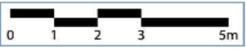

Examen de geografía
Escula secundaria federal "Cult of Chucky"
Geografía Primer grado
Tipo de proyección que se genera a partir de un cilindro imaginario que envuelve a la Tierra desde el Ecuador.
Cónica.
Cilíndrica.
Acimutal.
Cenital.
Es la categoría del espacio que permite estudiar las relaciones entre varios componentes y elementos de éste, agrupado zonas con base en esta relaciones, mas allá de los límites políticos.
El territorio
El paisaje
El lugar
la región
Este elemento representaría la
escala numérica
escala gráfica
escala métrica
escala de reducció
de un mapa.

Es el componente del espacio geográfico derivado de las actividades realizadas por sus habitantes, las cuales aprovechan y transforman los recursos del propio espacio para solventar sus necesidades como sociedad.
Económico.
Cultural.
Político.
Natural.
Proyección que se utiliza para representar los hemisferios Oriental y Occidental. En él se ven las zonas oceánicas incompletas.
Cónica
Acimutal-hemisférica
Acimutal-polar
Acimutal-ecuatorial
Es la categoría mediante la cual se aodena politica y administrativamente el espacio geográfico, estableciendo límites marítimos, aéros y terrestres.
El territorio.
El paisaje.
El lugar.
La región.
Es la escala más detallada por lo que permite presentar rasgos del espacio de un lugar especifico.
Local.
Nacional.
Mundial.
Planetaria.
El espacio geográfico es
cambiante
diverso
localizable
relacional
ya que sus diferentes componetes mantienen relaciones complejas entre sí, dando como producto especios únicos.
Sistema que funciona a partir de un conjunto de satélites que emiten señales para determinar con precisión la posición de personas, objetos o luegares en la superficie terrestre y oceánica.
El Sistema de Posicionamiento Global
El Sistema de Información geográfica
Las imágenes satelitales
Los receptores NAVSTAR (Navigation Satelite Timing and Ranking)
Es la categoría del espacio conformada por la interacción del relieve, clima, agua, suelo, vegetación, fauna, y las alteraciones del humano.
El territorio
El paisaje
El lugar
La región